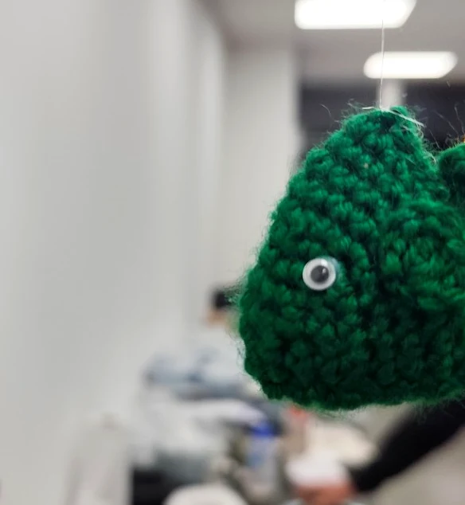
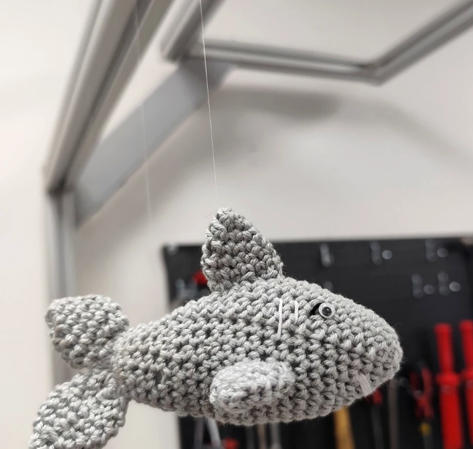
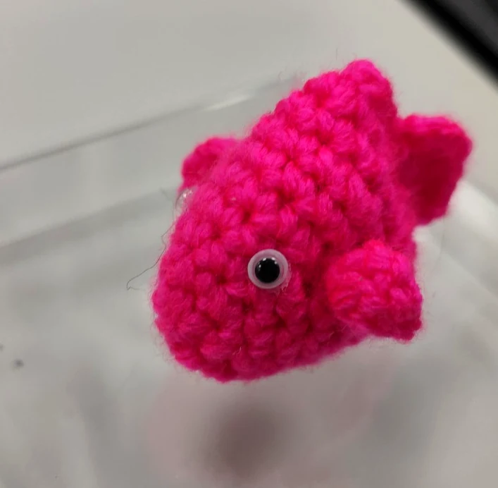

Handmade with care
Small stitches.
Big character.
A joyful collection of handmade crochet miniatures, playful ocean creatures and flowers designed to last far longer than a bouquet from the shop.

Featured pieces
The collection
Each piece is crocheted by hand, so small variations are part of its character — not a defect, but the signature of something genuinely handmade.

Orange Fish

Pink Fish

Green Fish

Orange Octopus

Gray Shark

Shark — Side View

Purple Mini Topper
Floral collection
Bouquets that never fade.
Colourful crochet flowers turn a familiar gift into something permanent. Every petal, leaf and stem is shaped by hand, one stitch at a time.


Ocean Friends
Playful sea creatures with individual expressions and plenty of personality.


The craft
Made slowly. Made properly.
This is the opposite of mass production. Every shape is built stitch by stitch, with attention paid to texture, expression and the small details that make each piece feel personal.
The result is a collection of tactile, cheerful objects that work as gifts, desk companions, decorations or simply tiny things that make people smile.
100% handmadeEach piece is individually crocheted.
One of a kindNatural variations make every item unique.
Custom ideasColours and themes can be discussed.
Made with careCreated as keepsakes, not factory products.

Custom orders
Have an idea in mind?
Custom colours, small characters, ocean creatures and floral pieces can be discussed. Contact details are not available in this archived project.